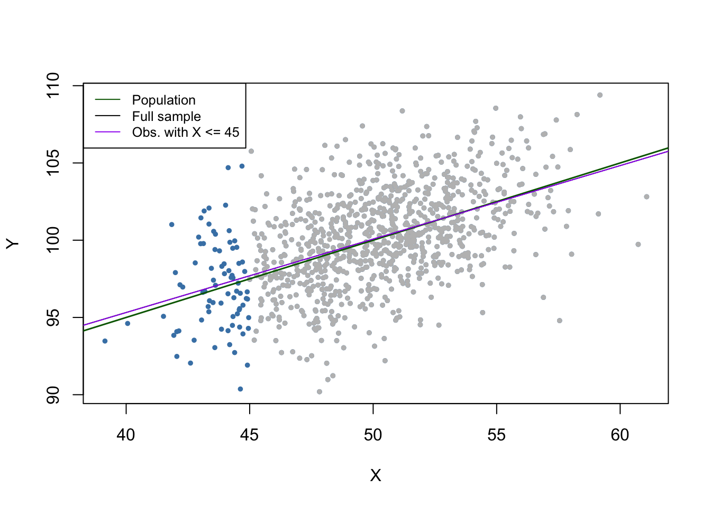

9 Assessing Studies Based on Multiple Regression
The majority of Chapter 9 of the book is of a theoretical nature. Therefore this section briefly reviews the concepts of internal and external validity in general and discusses examples of threats to internal and external validity of multiple regression models. We discuss consequences of
- misspecification of the functional form of the regression function
- measurement errors
- missing data and sample selection
- simultaneous causality
as well as sources of inconsistency of OLS standard errors. We also review concerns regarding internal validity and external validity in the context of forecasting using regression models.
The chapter closes with an application in R where we assess whether results found by multiple regression using the CASchools data can be generalized to school districts of another federal state of the United States.
For a more detailed treatment of these topics we encourage you to work through Chapter 9 of the book.
The following packages and their dependencies are needed for reproduction of the code chunks presented throughout this chapter:
- AER
- mvtnorm
- stargazer
library(AER)
library(mvtnorm)
library(stargazer)9.1 Internal and External Validity
Key Concept 9.1
Internal and External Validity
A statistical analysis has internal validity if the statistical inference made about causal effects are valid for the considered population.
An analysis is said to have external validity if inferences and conclusion are valid for the studies’ population and can be generalized to other populations and settings.
Threats to Internal Validity
There are two conditions for internal validity to exist:
The estimator of the causal effect, which is measured the coefficient(s) of interest, should be unbiased and consistent.
Statistical inference is valid, that is, hypothesis tests should have the desired size and confidence intervals should have the desired coverage probability.
In multiple regression, we estimate the model coefficients using OLS. Thus for condition 1. to be fulfilled we need the OLS estimator to be unbiased and consistent. For the second condition to be valid, the standard errors must be valid such that hypothesis testing and computation of confidence intervals yield results that are trustworthy. Remember that a sufficient condition for conditions 1. and 2. to be fulfilled is that the assumptions of Key Concept 6.4 hold.
Threats to External Validity
External validity might be invalid
if there are differences between the population studied and the population of interest.
if there are differences in the settings of the considered populations, e.g., the legal framework or the time of the investigation.
9.2 Threats to Internal Validity of Multiple Regression Analysis
This section treats five sources that cause the OLS estimator in (multiple) regression models to be biased and inconsistent for the causal effect of interest and discusses possible remedies. All five sources imply a violation of the first least squares assumption presented in Key Concept 6.4.
This sections treats:
omitted variable Bias
misspecification of the functional form
measurement errors
missing data and sample selection
simultaneous causality bias
Beside these threats for consistency of the estimator, we also briefly discuss causes of inconsistent estimation of OLS standard errors.
Omitted Variable Bias
Key Concept 9.2
Omitted Variable Bias: Should I include More Variables in My Regression?
Inclusion of additional variables reduces the risk of omitted variable bias but may increase the variance of the estimator of the coefficient of interest.
We present some guidelines that help deciding whether to include an additional variable:
Specify the coefficient(s) of interest
Identify the most important potential sources of omitted variable bias by using knowledge available before estimating the model. You should end up with a baseline specification and a set of regressors that are questionable
Use different model specifications to test whether questionable regressors have coefficients different from zero
Use tables to provide full disclosure of your results, i.e., present different model specifications that both support your argument and enable the reader to see the effect of including questionable regressors
By now you should be aware of omitted variable bias and its consequences. Key Concept 9.2 gives some guidelines on how to proceed if there are control variables that possibly allow to reduce omitted variable bias. If including additional variables to mitigate the bias is not an option because there are no adequate controls, there are different approaches to solve the problem:
Misspecification of the Functional Form of the Regression Function
If the population regression function is nonlinear but the regression function is linear, the functional form of the regression model is misspecified. This leads to a bias of the OLS estimator.
Key Concept 9.3
Functional Form Misspecification
A regression suffers from misspecification of the functional form when the functional form of the estimated regression model differs from the functional form of the population regression function. Functional form misspecification leads to biased and inconsistent coefficient estimators. A way to detect functional form misspecification is to plot the estimated regression function and the data. This may also be helpful to choose the correct functional form.
It is easy to come up with examples of misspecification of the functional form: consider the case where the population regression function is \[Y_i = X_i^2\] but the model used is \[Y_i = \beta_0 + \beta_1 X_i + u_i.\] Clearly, the regression function is misspecified here. We now simulate data and visualize this.
# set seed for reproducibility
set.seed(3)
# simulate data set
X <- runif(100, -5, 5)
Y <- X^2 + rnorm(100)
# estimate the regression function
ms_mod <- lm(Y ~ X)
ms_mod##
## Call:
## lm(formula = Y ~ X)
##
## Coefficients:
## (Intercept) X
## 8.11363 -0.04684# plot the data
plot(X, Y,
main = "Misspecification of Functional Form",
pch = 20,
col = "steelblue")
# plot the linear regression line
abline(ms_mod,
col = "darkred",
lwd = 2)
It is evident that the regression errors are relatively small for observations close to \(X=-3\) and \(X=3\) but that the errors increase for \(X\) values closer to zero and even more for values beyond \(-4\) and \(4\). Consequences are drastic: the intercept is estimated to be \(8.1\) and for the slope parameter we obtain an estimate obviously very close to zero. This issue does not disappear as the number of observations is increased because OLS is biased and inconsistent due to the misspecification of the regression function.
Measurement Error and Errors-in-Variables Bias
Key Concept 9.4
Errors-in-Variable Bias
When independent variables are measured imprecisely, we speak of errors-in-variables bias. This bias does not disappear if the sample size is large. If the measurement error has mean zero and is independent of the affected variable, the OLS estimator of the respective coefficient is biased towards zero.
where \(\overset{\sim}{X}_i\) and the error term \(v_i\) are correlated. Thus OLS would be biased and inconsistent for the true \(\beta_1\) in this example. One can show that direction and strength of the bias depend on the correlation between the observed regressor, \(\overset{\sim}{X}_i\), and the measurement error, \(w_i =X_i - \overset{\sim}{X}_i\). This correlation in turn depends on the type of the measurement error made.
The classical measurement error model assumes that the measurement error, \(w_i\), has zero mean and that it is uncorrelated with the variable, \(X_i\), and the error term of the population regression model, \(u_i\):
\[\begin{equation} \overset{\sim}{X}_i = X_i + w_i, \ \ \rho_{w_i,u_i}=0, \ \ \rho_{w_i,X_i}=0 \end{equation}\] Then it holds that \[\begin{equation} \widehat{\beta}_1 \xrightarrow{p}{\frac{\sigma_{X}^2}{\sigma_{X}^2 + \sigma_{w}^2}} \beta_1 \tag{9.1} \end{equation}\]which implies inconsistency as \(\sigma_{X}^2, \sigma_{w}^2 > 0\) such that the fraction in (9.1) is smaller than \(1\). Note that there are two extreme cases:
If there is no measurement error, \(\sigma_{w}^2=0\) such that \(\widehat{\beta}_1 \xrightarrow{p}{\beta_1}\).
if \(\sigma_{w}^2 \gg \sigma_{X}^2\) we have \(\widehat{\beta}_1 \xrightarrow{p}{0}\). This is the case if the measurement error is so large that there essentially is no information on \(X\) in the data that can be used to estimate \(\beta_1\).
The most obvious way to deal with errors-in-variables bias is to use an accurately measured \(X\). If this not possible, instrumental variables regression is an option. One might also deal with the issue by using a mathematical model of the measurement error and adjust the estimates appropriately: if it is plausible that the classical measurement error model applies and if there is information that can be used to estimate the ratio in equation (9.1), one could compute an estimate that corrects for the downward bias.
For example, consider two bivariate normally distributed random variables \(X,Y\). It is a well known result that the conditional expectation function of \(Y\) given \(X\) has the form \[\begin{align} E(Y\vert X) = E(Y) + \rho_{X,Y} \frac{\sigma_{Y}}{\sigma_{X}}\left[X-E(X)\right]. \tag{9.2} \end{align}\] Thus for \[\begin{align} (X, Y) \sim \mathcal{N}\left[\begin{pmatrix}50\\ 100\end{pmatrix},\begin{pmatrix}10 & 5 \\ 5 & 10 \end{pmatrix}\right] \tag{9.3} \end{align}\] according to (9.2), the population regression function is \[\begin{align*} Y_i =& \, 100 + 0.5 (X_i - 50) \\ =& \, 75 + 0.5 X_i. \tag{9.4} \end{align*}\]Now suppose you gather data on \(X\) and \(Y\), but that you can only measure \(\overset{\sim}{X_i} = X_i + w_i\) with \(w_i \overset{i.i.d.}{\sim} \mathcal{N}(0,10)\). Since the \(w_i\) are independent of the \(X_i\), there is no correlation between the \(X_i\) and the \(w_i\) so that we have a case of the classical measurement error model. We now illustrate this example in R using the package mvtnorm (Genz, Bretz, Miwa, Mi, & Hothorn, 2018).
# set seed
set.seed(1)
# load the package 'mvtnorm' and simulate bivariate normal data
library(mvtnorm)
dat <- data.frame(
rmvnorm(1000, c(50, 100),
sigma = cbind(c(10, 5), c(5, 10))))
# set columns names
colnames(dat) <- c("X", "Y")We now estimate a simple linear regression of \(Y\) on \(X\) using this sample data and run the same regression again but this time we add i.i.d. \(\mathcal{N}(0,10)\) errors added to \(X\).
# estimate the model (without measurement error)
noerror_mod <- lm(Y ~ X, data = dat)
# estimate the model (with measurement error in X)
dat$X <- dat$X + rnorm(n = 1000, sd = sqrt(10))
error_mod <- lm(Y ~ X, data = dat)
# print estimated coefficients to console
noerror_mod$coefficients## (Intercept) X
## 76.3002047 0.4755264error_mod$coefficients## (Intercept) X
## 87.276004 0.255212Next, we visualize the results and compare with the population regression function.
# plot sample data
plot(dat$X, dat$Y,
pch = 20,
col = "steelblue",
xlab = "X",
ylab = "Y")
# add population regression function
abline(coef = c(75, 0.5),
col = "darkgreen",
lwd = 1.5)
# add estimated regression functions
abline(noerror_mod,
col = "purple",
lwd = 1.5)
abline(error_mod,
col = "darkred",
lwd = 1.5)
# add legend
legend("topleft",
bg = "transparent",
cex = 0.8,
lty = 1,
col = c("darkgreen", "purple", "darkred"),
legend = c("Population", "No Errors", "Errors"))
In the situation without measurement error, the estimated regression function is close to the population regression function. Things are different when we use the mismeasured regressor \(X\): both the estimate for the intercept and the estimate for the coefficient on \(X\) differ considerably from results obtained using the “clean” data on \(X\). In particular \(\widehat{\beta}_1 = 0.255\), so there is a downward bias. We are in the comfortable situation to know \(\sigma_X^2\) and \(\sigma^2_w\). This allows us to correct for the bias using (9.1). Using this information we obtain the biased-corrected estimate \[\frac{\sigma_X^2 + \sigma_w^2}{\sigma_X^2} \cdot \widehat{\beta}_1 = \frac{10+10}{10} \cdot 0.255 = 0.51\] which is quite close to \(\beta_1=0.5\), the true coefficient from the population regression function.
Bear in mind that the above analysis uses a single sample. Thus one may argue that the results are just a coincidence. Can you show the contrary using a simulation study?
Missing Data and Sample Selection
Key Concept 9.5
Sample Selection Bias
When the sampling process influences the availability of data and when there is a relation of this sampling process to the dependent variable that goes beyond the dependence on the regressors, we say that there is a sample selection bias. This bias is due to correlation between one or more regressors and the error term. Sample selection implies both bias and inconsistency of the OLS estimator.
There are three cases of sample selection. Only one of them poses a threat to internal validity of a regression study. The three cases are:
Data are missing at random.
Data are missing based on the value of a regressor.
Data are missing due to a selection process which is related to the dependent variable.
Let us jump back to the example of variables \(X\) and \(Y\) distributed as stated in equation (9.3) and illustrate all three cases using R.
If data are missing at random, this is nothing but loosing observations. For example, loosing \(50\%\) of the sample would be the same as never having seen the (randomly chosen) half of the sample observed. Therefore, missing data do not introduce an estimation bias and “only” lead to less efficient estimators.
# set seed
set.seed(1)
# simulate data
dat <- data.frame(
rmvnorm(1000, c(50, 100),
sigma = cbind(c(10, 5), c(5, 10))))
colnames(dat) <- c("X", "Y")
# mark 500 randomly selected observations
id <- sample(1:1000, size = 500)
plot(dat$X[-id],
dat$Y[-id],
col = "steelblue",
pch = 20,
cex = 0.8,
xlab = "X",
ylab = "Y")
points(dat$X[id],
dat$Y[id],
cex = 0.8,
col = "gray",
pch = 20)
# add the population regression function
abline(coef = c(75, 0.5),
col = "darkgreen",
lwd = 1.5)
# add the estimated regression function for the full sample
abline(noerror_mod)
# estimate model case 1 and add the regression line
dat <- dat[-id, ]
c1_mod <- lm(dat$Y ~ dat$X, data = dat)
abline(c1_mod, col = "purple")
# add a legend
legend("topleft",
lty = 1,
bg = "transparent",
cex = 0.8,
col = c("darkgreen", "black", "purple"),
legend = c("Population", "Full sample", "500 obs. randomly selected"))
The gray dots represent the \(500\) discarded observations. When using the remaining observations, the estimation results deviate only marginally from the results obtained using the full sample.
Selecting data randomly based on the value of a regressor has also the effect of reducing the sample size and does not introduce estimation bias. We will now drop all observations with \(X > 45\), estimate the model again and compare.
# set random seed
set.seed(1)
# simulate data
dat <- data.frame(
rmvnorm(1000, c(50, 100),
sigma = cbind(c(10, 5), c(5, 10))))
colnames(dat) <- c("X", "Y")
# mark observations
id <- dat$X >= 45
plot(dat$X[-id],
dat$Y[-id],
col = "steelblue",
cex = 0.8,
pch = 20,
xlab = "X",
ylab = "Y")
points(dat$X[id],
dat$Y[id],
col = "gray",
cex = 0.8,
pch = 20)
# add population regression function
abline(coef = c(75, 0.5),
col = "darkgreen",
lwd = 1.5)
# add estimated regression function for full sample
abline(noerror_mod)
# estimate model case 1, add regression line
dat <- dat[-id, ]
c2_mod <- lm(dat$Y ~ dat$X, data = dat)
abline(c2_mod, col = "purple")
# add legend
legend("topleft",
lty = 1,
bg = "transparent",
cex = 0.8,
col = c("darkgreen", "black", "purple"),
legend = c("Population", "Full sample", "Obs. with X <= 45"))
Note that although we dropped more than \(90\%\) of all observations, the estimated regression function is very close to the line estimated based on the full sample.
In the third case we face sample selection bias. We can illustrate this by using only observations with \(X_i<55\) and \(Y_i>100\). These observations are easily identified using the function which() and logical operators: which(dat$X < 55 & dat$Y > 100)
# set random seed
set.seed(1)
# simulate data
dat <- data.frame(
rmvnorm(1000, c(50,100),
sigma = cbind(c(10,5), c(5,10))))
colnames(dat) <- c("X","Y")
# mark observations
id <- which(dat$X <= 55 & dat$Y >= 100)
plot(dat$X[-id],
dat$Y[-id],
col = "gray",
cex = 0.8,
pch = 20,
xlab = "X",
ylab = "Y")
points(dat$X[id],
dat$Y[id],
col = "steelblue",
cex = 0.8,
pch = 20)
# add population regression function
abline(coef = c(75, 0.5),
col = "darkgreen",
lwd = 1.5)
# add estimated regression function for full sample
abline(noerror_mod)
# estimate model case 1, add regression line
dat <- dat[id, ]
c3_mod <- lm(dat$Y ~ dat$X, data = dat)
abline(c3_mod, col = "purple")
# add legend
legend("topleft",
lty = 1,
bg = "transparent",
cex = 0.8,
col = c("darkgreen", "black", "purple"),
legend = c("Population", "Full sample", "X <= 55 & Y >= 100"))
We see that the selection process leads to biased estimation results.
There are methods that allow to correct for sample selection bias. However, these methods are beyond the scope of the book and are therefore not considered here. The concept of sample selection bias is summarized in Key Concept 9.5.
Simultaneous Causality
Key Concept 9.6
Simultaneous Causality Bias
So far we have assumed that the changes in the independent variable \(X\) are responsible for changes in the dependent variable \(Y\). When the reverse is also true, we say that there is simultaneous causality between \(X\) and \(Y\). This reverse causality leads to correlation between \(X\) and the error in the population regression of interest such that the coefficient on \(X\) is estimated with bias.
Suppose we are interested in estimating the effect of a \(20\%\) increase in cigarettes prices on cigarette consumption in the United States using a multiple regression model. This may be investigated using the dataset CigarettesSW which is part of the AER package. CigarettesSW is a panel data set on cigarette consumption for all 48 continental U.S. federal states from 1985-1995 and provides data on economic indicators and average local prices, taxes and per capita pack consumption.
After loading the data set, we pick observations for the year 1995 and plot logarithms of the per pack price, price, against pack consumption, packs, and estimate a simple linear regression model.
# load the data set
library(AER)
data("CigarettesSW")
c1995 <- subset(CigarettesSW, year == "1995")
# estimate the model
cigcon_mod <- lm(log(packs) ~ log(price), data = c1995)
cigcon_mod##
## Call:
## lm(formula = log(packs) ~ log(price), data = c1995)
##
## Coefficients:
## (Intercept) log(price)
## 10.850 -1.213# plot the estimated regression line and the data
plot(log(c1995$price), log(c1995$packs),
xlab = "ln(Price)",
ylab = "ln(Consumption)",
main = "Demand for Cigarettes",
pch = 20,
col = "steelblue")
abline(cigcon_mod,
col = "darkred",
lwd = 1.5)
Remember from Chapter 8 that, due to the log-log specification, in the population regression the coefficient on the logarithm of price is interpreted as the price elasticity of consumption. The estimated coefficient suggests that a \(1\%\) increase in cigarettes prices reduces cigarette consumption by about \(1.2\%\), on average. Have we estimated a demand curve? The answer is no: this is a classic example of simultaneous causality, see Key Concept 9.6. The observations are market equilibria which are determined by both changes in supply and changes in demand. Therefore the price is correlated with the error term and the OLS estimator is biased. We can neither estimate a demand nor a supply curve consistently using this approach.
We will return to this issue in Chapter 12 which treats instrumental variables regression, an approach that allows consistent estimation when there is simultaneous causality.
Sources of Inconsistency of OLS Standard Errors
There are two central threats to computation of consistent OLS standard errors:
Heteroskedasticity: implications of heteroskedasticiy have been discussed in Chapter 5. Heteroskedasticity-robust standard errors as computed by the function vcovHC() from the package sandwich produce valid standard errors under heteroskedasticity.
Serial correlation: if the population regression error is correlated across observations, we have serial correlation. This often happens in applications where repeated observations are used, e.g., in panel data studies. As for heteroskedasticity, vcovHC() can be used to obtain valid standard errors when there is serial correlation.
Inconsistent standard errors will produce invalid hypothesis tests and wrong confidence intervals. For example, when testing the null that some model coefficient is zero, we cannot trust the outcome anymore because the test may fail to have a size of \(5\%\) due to the wrongly computed standard error.
Key Concept 9.7 summarizes all threats to internal validity discussed above.
Key Concept 9.7
Threats to Internal Validity of a Regression Study
The five primary threats to internal validity of a multiple regression study are:
Omitted variables
Misspecification of functional form
Errors in variables (measurement errors in the regressors)
Sample selection
Simultaneous causality
All these threats lead to failure of the first least squares assumption \[E(u_i\vert X_{1i},\dots ,X_{ki}) \neq 0\] so that the OLS estimator is biased and inconsistent.
Furthermore, if one does not adjust for heteroskedasticity and/or serial correlation, incorrect standard errors may be a threat to internal validity of the study.
9.3 Internal and External Validity when the Regression is Used for Forecasting
Recall the regression of test scores on the student-teacher ratio (\(STR\)) performed in Chapter 4:
linear_model <- lm(score ~ STR, data = CASchools)
linear_model##
## Call:
## lm(formula = score ~ STR, data = CASchools)
##
## Coefficients:
## (Intercept) STR
## 698.93 -2.28The estimated regression function was
\[ \widehat{TestScore} = 698.9 - 2.28 \times STR.\]
The book discusses the example of a parent moving to a metropolitan area who plans to choose where to live based on the quality of local schools: a school district’s average test score is an adequate measure for the quality. However, the parent has information on the student-teacher ratio only such that test scores need to be predicted. Although we have established that there is omitted variable bias in this model due to omission of variables like student learning opportunities outside school, the share of English learners and so on, linear_model may in fact be useful for the parent:
The parent need not care if the coefficient on \(STR\) has causal interpretation, she wants \(STR\) to explain as much variation in test scores as possible. Therefore, despite the fact that linear_model cannot be used to estimate the causal effect of a change in \(STR\) on test scores, it can be considered a reliable predictor of test scores in general.
Thus, the threats to internal validity as summarized in Key Concept 9.7 are negligible for the parent. This is, as instanced in the book, different for a superintendent who has been tasked to take measures that increase test scores: she requires a more reliable model that does not suffer from the threats listed in Key Concept 9.7.
Consult Chapter 9.3 of the book for the corresponding discussion.
9.4 Example: Test Scores and Class Size
This section discusses internal and external validity of the results gained from analyzing the California test score data using multiple regression models.
External Validity of the Study
External validity of the California test score analysis means that its results can be generalized. Whether this is possible depends on the population and the setting. Following the book we conduct the same analysis using data for fourth graders in \(220\) public school districts in Massachusetts in 1998. Like CASchools, the data set MASchools is part of the AER package (Christian Kleiber & Zeileis, 2017). Use the help function (?MASchools) to get information on the definitions of all the variables contained.
We start by loading the data set and proceed by computing some summary statistics.
# attach the 'MASchools' dataset
data("MASchools")
summary(MASchools)## district municipality expreg expspecial
## Length:220 Length:220 Min. :2905 Min. : 3832
## Class :character Class :character 1st Qu.:4065 1st Qu.: 7442
## Mode :character Mode :character Median :4488 Median : 8354
## Mean :4605 Mean : 8901
## 3rd Qu.:4972 3rd Qu.: 9722
## Max. :8759 Max. :53569
##
## expbil expocc exptot scratio
## Min. : 0 Min. : 0 Min. :3465 Min. : 2.300
## 1st Qu.: 0 1st Qu.: 0 1st Qu.:4730 1st Qu.: 6.100
## Median : 0 Median : 0 Median :5155 Median : 7.800
## Mean : 3037 Mean : 1104 Mean :5370 Mean : 8.107
## 3rd Qu.: 0 3rd Qu.: 0 3rd Qu.:5789 3rd Qu.: 9.800
## Max. :295140 Max. :15088 Max. :9868 Max. :18.400
## NA's :9
## special lunch stratio income
## Min. : 8.10 Min. : 0.40 Min. :11.40 Min. : 9.686
## 1st Qu.:13.38 1st Qu.: 5.30 1st Qu.:15.80 1st Qu.:15.223
## Median :15.45 Median :10.55 Median :17.10 Median :17.128
## Mean :15.97 Mean :15.32 Mean :17.34 Mean :18.747
## 3rd Qu.:17.93 3rd Qu.:20.02 3rd Qu.:19.02 3rd Qu.:20.376
## Max. :34.30 Max. :76.20 Max. :27.00 Max. :46.855
##
## score4 score8 salary english
## Min. :658.0 Min. :641.0 Min. :24.96 Min. : 0.0000
## 1st Qu.:701.0 1st Qu.:685.0 1st Qu.:33.80 1st Qu.: 0.0000
## Median :711.0 Median :698.0 Median :35.88 Median : 0.0000
## Mean :709.8 Mean :698.4 Mean :35.99 Mean : 1.1177
## 3rd Qu.:720.0 3rd Qu.:712.0 3rd Qu.:37.96 3rd Qu.: 0.8859
## Max. :740.0 Max. :747.0 Max. :44.49 Max. :24.4939
## NA's :40 NA's :25It is fairly easy to replicate key components of Table 9.1 of the book using R. To be consistent with variable names used in the CASchools data set, we do some formatting beforehand.
# Customized variables in MASchools
MASchools$score <- MASchools$score4
MASchools$STR <- MASchools$stratio
# Reproduce Table 9.1 of the book
vars <- c("score", "STR", "english", "lunch", "income")
cbind(CA_mean = sapply(CASchools[, vars], mean),
CA_sd = sapply(CASchools[, vars], sd),
MA_mean = sapply(MASchools[, vars], mean),
MA_sd = sapply(MASchools[, vars], sd))## CA_mean CA_sd MA_mean MA_sd
## score 654.15655 19.053347 709.827273 15.126474
## STR 19.64043 1.891812 17.344091 2.276666
## english 15.76816 18.285927 1.117676 2.900940
## lunch 44.70524 27.123381 15.315909 15.060068
## income 15.31659 7.225890 18.746764 5.807637The summary statistics reveal that the average test score is higher for school districts in Massachusetts. The test used in Massachusetts is somewhat different from the one used in California (the Massachusetts test score also includes results for the school subject “Science”), therefore a direct comparison of test scores is not appropriate. We also see that, on average, classes are smaller in Massachusetts than in California and that the average district income, average percentage of English learners as well as the average share of students receiving subsidized lunch differ considerably from the averages computed for California. There are also notable differences in the observed dispersion of the variables.
Following the book we examine the relationship between district income and test scores in Massachusetts as we have done before in Chapter 8 for the California data and reproduce Figure 9.2 of the book.
# estimate linear model
Linear_model_MA <- lm(score ~ income, data = MASchools)
Linear_model_MA##
## Call:
## lm(formula = score ~ income, data = MASchools)
##
## Coefficients:
## (Intercept) income
## 679.387 1.624# estimate linear-log model
Linearlog_model_MA <- lm(score ~ log(income), data = MASchools)
Linearlog_model_MA##
## Call:
## lm(formula = score ~ log(income), data = MASchools)
##
## Coefficients:
## (Intercept) log(income)
## 600.80 37.71# estimate Cubic model
cubic_model_MA <- lm(score ~ I(income) + I(income^2) + I(income^3), data = MASchools)
cubic_model_MA##
## Call:
## lm(formula = score ~ I(income) + I(income^2) + I(income^3), data = MASchools)
##
## Coefficients:
## (Intercept) I(income) I(income^2) I(income^3)
## 600.398531 10.635382 -0.296887 0.002762# plot data
plot(MASchools$income, MASchools$score,
pch = 20,
col = "steelblue",
xlab = "District income",
ylab = "Test score",
xlim = c(0, 50),
ylim = c(620, 780))
# add estimated regression line for the linear model
abline(Linear_model_MA, lwd = 2)
# add estimated regression function for Linear-log model
order_id <- order(MASchools$income)
lines(MASchools$income[order_id],
fitted(Linearlog_model_MA)[order_id],
col = "darkgreen",
lwd = 2)
# add estimated cubic regression function
lines(x = MASchools$income[order_id],
y = fitted(cubic_model_MA)[order_id],
col = "orange",
lwd = 2)
# add a legend
legend("topleft",
legend = c("Linear", "Linear-Log", "Cubic"),
lty = 1,
col = c("Black", "darkgreen", "orange"))
The plot indicates that the cubic specification fits the data best. Interestingly, this is different from the CASchools data where the pattern of nonlinearity is better described by the linear-log specification.
We continue by estimating most of the model specifications used for analysis of the CASchools data set in Chapter 8 and use stargazer() (Hlavac, 2018) to generate a tabular representation of the regression results.
# add 'HiEL' to 'MASchools'
MASchools$HiEL <- as.numeric(MASchools$english > median(MASchools$english))
# estimate the model specifications from Table 9.2 of the book
TestScore_MA_mod1 <- lm(score ~ STR, data = MASchools)
TestScore_MA_mod2 <- lm(score ~ STR + english + lunch + log(income),
data = MASchools)
TestScore_MA_mod3 <- lm(score ~ STR + english + lunch + income + I(income^2)
+ I(income^3), data = MASchools)
TestScore_MA_mod4 <- lm(score ~ STR + I(STR^2) + I(STR^3) + english + lunch + income
+ I(income^2) + I(income^3), data = MASchools)
TestScore_MA_mod5 <- lm(score ~ STR + I(income^2) + I(income^3) + HiEL:STR + lunch
+ income, data = MASchools)
TestScore_MA_mod6 <- lm(score ~ STR + I(income^2) + I(income^3) + HiEL + HiEL:STR + lunch
+ income, data = MASchools)
# gather robust standard errors
rob_se <- list(sqrt(diag(vcovHC(TestScore_MA_mod1, type = "HC1"))),
sqrt(diag(vcovHC(TestScore_MA_mod2, type = "HC1"))),
sqrt(diag(vcovHC(TestScore_MA_mod3, type = "HC1"))),
sqrt(diag(vcovHC(TestScore_MA_mod4, type = "HC1"))),
sqrt(diag(vcovHC(TestScore_MA_mod5, type = "HC1"))),
sqrt(diag(vcovHC(TestScore_MA_mod6, type = "HC1"))))
# generate a table with 'stargazer()'
library(stargazer)
stargazer(Linear_model_MA, TestScore_MA_mod2, TestScore_MA_mod3,
TestScore_MA_mod4, TestScore_MA_mod5, TestScore_MA_mod6,
title = "Regressions Using Massachusetts Test Score Data",
type = "latex",
digits = 3,
header = FALSE,
se = rob_se,
object.names = TRUE,
model.numbers = FALSE,
column.labels = c("(I)", "(II)", "(III)", "(IV)", "(V)", "(VI)"))| Dependent Variable: Score | ||||||
| score | ||||||
| (I) | (II) | (III) | (IV) | (V) | (VI) | |
| STR | -1.718*** | -0.689** | -0.641** | 12.426 | -1.018*** | -0.672** |
| (0.499) | (0.270) | (0.268) | (14.010) | (0.370) | (0.271) | |
| I(STR2) | -0.680 | |||||
| (0.737) | ||||||
| I(STR3) | 0.011 | |||||
| (0.013) | ||||||
| english | -0.411 | -0.437 | -0.434 | |||
| (0.306) | (0.303) | (0.300) | ||||
| HiEL | -12.561 | |||||
| (9.793) | ||||||
| lunch | -0.521*** | -0.582*** | -0.587*** | -0.709*** | -0.653*** | |
| (0.078) | (0.097) | (0.104) | (0.091) | (0.073) | ||
| log(income) | 16.529*** | |||||
| (3.146) | ||||||
| income | -3.067 | -3.382 | -3.867 | -3.218 | ||
| (2.353) | (2.491) | (2.488) | (2.306) | |||
| I(income2) | 0.164* | 0.174* | 0.184** | 0.165* | ||
| (0.085) | (0.089) | (0.090) | (0.085) | |||
| I(income3) | -0.002** | -0.002** | -0.002** | -0.002** | ||
| (0.001) | (0.001) | (0.001) | (0.001) | |||
| STR:HiEL | 0.799 | |||||
| (0.555) | ||||||
| Constant | 739.621*** | 682.432*** | 744.025*** | 665.496*** | 759.914*** | 747.364*** |
| (8.607) | (11.497) | (21.318) | (81.332) | (23.233) | (20.278) | |
| Observations | 220 | 220 | 220 | 220 | 220 | 220 |
| R2 | 0.067 | 0.676 | 0.685 | 0.687 | 0.686 | 0.681 |
| Adjusted R2 | 0.063 | 0.670 | 0.676 | 0.675 | 0.675 | 0.674 |
| Residual Std. Error | 14.646 (df = 218) | 8.686 (df = 215) | 8.607 (df = 213) | 8.626 (df = 211) | 8.621 (df = 212) | 8.637 (df = 214) |
| F Statistic | 15.616*** (df = 1; 218) | 112.284*** (df = 4; 215) | 77.232*** (df = 6; 213) | 57.803*** (df = 8; 211) | 66.023*** (df = 7; 212) | 91.560*** (df = 5; 214) |
| Note: | *p<0.1; **p<0.05; ***p<0.01 | |||||
Table 9.1: Regressions Using Massachusetts Test Score Data
Next we reproduce the \(F\)-statistics and \(p\)-values for testing exclusion of groups of variables.
# F-test model (3)
linearHypothesis(TestScore_MA_mod3,
c("I(income^2)=0", "I(income^3)=0"),
vcov. = vcovHC, type = "HC1")## Linear hypothesis test
##
## Hypothesis:
## I(income^2) = 0
## I(income^3) = 0
##
## Model 1: restricted model
## Model 2: score ~ STR + english + lunch + income + I(income^2) + I(income^3)
##
## Note: Coefficient covariance matrix supplied.
##
## Res.Df Df F Pr(>F)
## 1 215
## 2 213 2 6.227 0.002354 **
## ---
## Signif. codes: 0 '***' 0.001 '**' 0.01 '*' 0.05 '.' 0.1 ' ' 1# F-tests model (4)
linearHypothesis(TestScore_MA_mod4,
c("STR=0", "I(STR^2)=0", "I(STR^3)=0"),
vcov. = vcovHC, type = "HC1")## Linear hypothesis test
##
## Hypothesis:
## STR = 0
## I(STR^2) = 0
## I(STR^3) = 0
##
## Model 1: restricted model
## Model 2: score ~ STR + I(STR^2) + I(STR^3) + english + lunch + income +
## I(income^2) + I(income^3)
##
## Note: Coefficient covariance matrix supplied.
##
## Res.Df Df F Pr(>F)
## 1 214
## 2 211 3 2.3364 0.07478 .
## ---
## Signif. codes: 0 '***' 0.001 '**' 0.01 '*' 0.05 '.' 0.1 ' ' 1linearHypothesis(TestScore_MA_mod4,
c("I(STR^2)=0", "I(STR^3)=0"),
vcov. = vcovHC, type = "HC1")## Linear hypothesis test
##
## Hypothesis:
## I(STR^2) = 0
## I(STR^3) = 0
##
## Model 1: restricted model
## Model 2: score ~ STR + I(STR^2) + I(STR^3) + english + lunch + income +
## I(income^2) + I(income^3)
##
## Note: Coefficient covariance matrix supplied.
##
## Res.Df Df F Pr(>F)
## 1 213
## 2 211 2 0.3396 0.7124linearHypothesis(TestScore_MA_mod4,
c("I(income^2)=0", "I(income^3)=0"),
vcov. = vcovHC, type = "HC1")## Linear hypothesis test
##
## Hypothesis:
## I(income^2) = 0
## I(income^3) = 0
##
## Model 1: restricted model
## Model 2: score ~ STR + I(STR^2) + I(STR^3) + english + lunch + income +
## I(income^2) + I(income^3)
##
## Note: Coefficient covariance matrix supplied.
##
## Res.Df Df F Pr(>F)
## 1 213
## 2 211 2 5.7043 0.003866 **
## ---
## Signif. codes: 0 '***' 0.001 '**' 0.01 '*' 0.05 '.' 0.1 ' ' 1# F-tests model (5)
linearHypothesis(TestScore_MA_mod5,
c("STR=0", "STR:HiEL=0"),
vcov. = vcovHC, type = "HC1")## Linear hypothesis test
##
## Hypothesis:
## STR = 0
## STR:HiEL = 0
##
## Model 1: restricted model
## Model 2: score ~ STR + HiEL + HiEL:STR + lunch + income + I(income^2) +
## I(income^3)
##
## Note: Coefficient covariance matrix supplied.
##
## Res.Df Df F Pr(>F)
## 1 214
## 2 212 2 3.7663 0.0247 *
## ---
## Signif. codes: 0 '***' 0.001 '**' 0.01 '*' 0.05 '.' 0.1 ' ' 1linearHypothesis(TestScore_MA_mod5,
c("I(income^2)=0", "I(income^3)=0"),
vcov. = vcovHC, type = "HC1")## Linear hypothesis test
##
## Hypothesis:
## I(income^2) = 0
## I(income^3) = 0
##
## Model 1: restricted model
## Model 2: score ~ STR + HiEL + HiEL:STR + lunch + income + I(income^2) +
## I(income^3)
##
## Note: Coefficient covariance matrix supplied.
##
## Res.Df Df F Pr(>F)
## 1 214
## 2 212 2 3.2201 0.04191 *
## ---
## Signif. codes: 0 '***' 0.001 '**' 0.01 '*' 0.05 '.' 0.1 ' ' 1linearHypothesis(TestScore_MA_mod5,
c("HiEL=0", "STR:HiEL=0"),
vcov. = vcovHC, type = "HC1")## Linear hypothesis test
##
## Hypothesis:
## HiEL = 0
## STR:HiEL = 0
##
## Model 1: restricted model
## Model 2: score ~ STR + HiEL + HiEL:STR + lunch + income + I(income^2) +
## I(income^3)
##
## Note: Coefficient covariance matrix supplied.
##
## Res.Df Df F Pr(>F)
## 1 214
## 2 212 2 1.4674 0.2328# F-test Model (6)
linearHypothesis(TestScore_MA_mod6,
c("I(income^2)=0", "I(income^3)=0"),
vcov. = vcovHC, type = "HC1")## Linear hypothesis test
##
## Hypothesis:
## I(income^2) = 0
## I(income^3) = 0
##
## Model 1: restricted model
## Model 2: score ~ STR + lunch + income + I(income^2) + I(income^3)
##
## Note: Coefficient covariance matrix supplied.
##
## Res.Df Df F Pr(>F)
## 1 216
## 2 214 2 4.2776 0.01508 *
## ---
## Signif. codes: 0 '***' 0.001 '**' 0.01 '*' 0.05 '.' 0.1 ' ' 1We see that, in terms of \(\bar{R}^2\), specification (3) which uses a cubic to model the relationship between district income and test scores indeed performs better than the linear-log specification (2). Using different \(F\)-tests on models (4) and (5), we cannot reject the hypothesis that there is no nonlinear relationship between student teacher ratio and test score and also that the share of English learners has an influence on the relationship of interest. Furthermore, regression (6) shows that the percentage of English learners can be omitted as a regressor. Because of the model specifications made in (4) to (6) do not lead to substantially different results than those of regression (3), we choose model (3) as the most suitable specification.
In comparison to the California data, we observe the following results:
Controlling for the students’ background characteristics in model specification (2) reduces the coefficient of interest (student-teacher ratio) by roughly \(60\%\). The estimated coefficients are close to each other.
The coefficient on student-teacher ratio is always significantly different from zero at the level of \(1\%\) for both data sets. This holds for all considered model specifications in both studies.
In both studies the share of English learners in a school district is of little importance for the estimated impact of a change in the student-teacher ratio on test score.
The biggest difference is that, in contrast to the California results, we do not find evidence of a nonlinear relationship between test scores and the student teacher ratio for the Massachusetts data since the corresponding \(F\)-tests for model (4) do not reject.
As pointed out in the book, the test scores for California and Massachusetts have different units because the underlying tests are different. Thus the estimated coefficients on the student-teacher ratio in both regressions cannot be compared before standardizing test scores to the same units as \[\frac{Testscore - \overline{TestScore}}{\sigma_{TestScore}}\] for all observations in both data sets and running the regressions of interest using the standardized data again. One can show that the coefficient on student-teacher ratio in the regression using standardized test scores is the coefficient of the original regression divided by the standard deviation of test scores.
For model (3) of the Massachusetts data, the estimated coefficient on the student-teacher ratio is \(-0.64\). A reduction of the student-teacher ratio by two students is predicted to increase test scores by \(-2 \cdot (-0.64) = 1.28\) points. Thus we can compute the effect of a reduction of student-teacher ratio by two students on the standardized test scores as follows:
TestScore_MA_mod3$coefficients[2] / sd(MASchools$score) * (-2)## STR
## 0.08474001For Massachusetts the predicted increase of test scores due to a reduction of the student-teacher ratio by two students is \(0.085\) standard deviations of the distribution of the observed distribution of test scores.
Using the linear specification (2) for California, the estimated coefficient on the student-teacher ratio is \(-0.73\) so the predicted increase of test scores induced by a reduction of the student-teacher ratio by two students is \(-0.73 \cdot (-2) = 1.46\). We use R to compute the predicted change in standard deviation units:
TestScore_mod2$coefficients[2] / sd(CASchools$score) * (-2)## STR
## 0.07708103This shows that the the predicted increase of test scores due to a reduction of the student-teacher ratio by two students is \(0.077\) standard deviation of the observed distribution of test scores for the California data.
In terms of standardized test scores, the predicted change is essentially the same for school districts in California and Massachusetts.
Altogether, the results support external validity of the inferences made using data on Californian elementary school districts — at least for Massachusetts.
Internal Validity of the Study
External validity of the study does not ensure their internal validity. Although the chosen model specification improves upon a simple linear regression model, internal validity may still be violated due to some of the threats listed in Key Concept 9.7. These threats are:
omitted variable bias
misspecification of functional form
errors in variables
sample selection issues
simultaneous causality
heteroskedasticity
correlation of errors across observations
Consult the book for an in-depth discussion of these threats in view of both test score studies.
Summary
We have found that there is a small but statistically significant effect of the student-teacher ratio on test scores. However, it remains unclear if we have indeed estimated the causal effect of interest since — despite that our approach including control variables, taking into account nonlinearities in the population regression function and statistical inference using robust standard errors — the results might still be biased for example if there are omitted factors which we have not considered. Thus internal validity of the study remains questionable. As we have concluded from comparison with the analysis of the Massachusetts data set, this result may be externally valid.
The following chapters address techniques that can be remedies to all the threats to internal validity listed in Key Concept 9.7 if multiple regression alone is insufficient. This includes regression using panel data and approaches that employ instrumental variables.
9.5 Exercises
1. Simulation Study: Misspecification of Functional Form
As stated in Chapter 9.2, misspecification of the regression function violates assumption 1 of Key Concept 6.3 so that the OLS estimator will be biased and inconsistent. We have illustrated the bias of \(\hat{\beta}_0\) for the example of the quadratic population regression function \[Y_i = X_i^2 \] and the linear model \[Y_i = \beta_0 + \beta_1 X_i + u_i, \, u_i \sim \mathcal{N}(0,1)\] using 100 randomly generated observations. Strictly speaking, this finding could be just a coincidence because we consider just one estimate obtained using a single data set.
In this exercise, you have to generate simulation evidence for the bias of \(\hat{\beta}_0\) in the model \[Y_i = \beta_0 + \beta_1 X_i + u_i\] if the population regression function is \[Y_i = X_i^2.\]
Instructions:
Make sure to use the definitions suggested in the skeleton code in script.R to complete the following tasks:
Generate 1000 OLS estimates of \(\beta_0\) in the model above using a for() loop where \(X_i \sim \mathcal{U}[-5,5]\), \(u_i \sim \mathcal{N}(0,1)\) using samples of size \(100\). Save the estimates in beta_hats.
Compare the sample mean of the estimates to the true parameter using the == operator.
Hint:
You can generate random numbers from a uniform distribution using runif().
2. Simulation Study: Errors-in-Variables Bias
Consider again the application of the classical measurement error model introduced in Chapter 9.2:
The single regressor \(X_i\) is measured with error so that \(\overset{\sim}{X}_i\) is observed instead. Thus one estimates \(\beta_1\) in \[\begin{align*} Y_i =& \, \beta_0 + \beta_1 \overset{\sim}{X}_i + \underbrace{\beta_1 (X_i -\overset{\sim}{X}_i) + u_i}_{=v_i} \\ Y_i =& \, \beta_0 + \beta_1 \overset{\sim}{X}_i + v_i \end{align*}\]instead of \[Y_i = \beta_0 + \beta_1 X_i + u_i,\]
with the zero mean error \(w_i\) being uncorrelated with \(X_i\) and \(u_i\). Then \(\beta_1\) is inconsistently estimated by OLS: \[\begin{equation} \widehat{\beta}_1 \xrightarrow{p}{\frac{\sigma_{X}^2}{\sigma_{X}^2 + \sigma_{w}^2}} \beta_1 \end{equation}\]Let \[(X, Y) \sim \mathcal{N}\left[\begin{pmatrix}50\\ 100\end{pmatrix},\begin{pmatrix}10 & 5 \\ 5 & 10 \end{pmatrix}\right].\] Recall from (9.2) that \(E(Y_i\vert X_i) = 75 + 0.5 X_i\) in this case. Further Assume that \(\overset{\sim}{X_i} = X_i + w_i\) with \(w_i \overset{i.i.d}{\sim} \mathcal{N}(0,10)\).
As mentioned in Exercise 1, Chapter 9.2 discusses the consequences of the measurement error for the OLS estimator of \(\beta_1\) in this setting based on a single sample and and thus just one estimate. Strictly speaking, the conclusion made could be wrong because the oberseved bias may be due to random variation. A Monto Carlo simulation is more appropriate here.
Instructions:
Show that \(\beta_1\) is estimated with a bias using a simulation study. Make sure to use the definitions suggested in the skeleton code in script.R to complete the following tasks:
Generate 1000 estimates of \(\beta_1\) in the simple regression model \[Y_i = \beta_0 + \beta_1 X_i + u_i.\] Use rmvnorm() to generate samples of 100 random observations from the bivariate normal distribution stated above.
Save the estimates in beta_hats.
Compute the sample mean of the estimates.
References
Genz, A., Bretz, F., Miwa, T., Mi, X., & Hothorn, T. (2018). mvtnorm: Multivariate Normal and t Distributions (Version 1.0-8). Retrieved from https://CRAN.R-project.org/package=mvtnorm
Kleiber, C., & Zeileis, A. (2017). AER: Applied Econometrics with R (Version 1.2-5). Retrieved from https://CRAN.R-project.org/package=AER
Hlavac, M. (2018). stargazer: Well-Formatted Regression and Summary Statistics Tables (Version 5.2.2). Retrieved from https://CRAN.R-project.org/package=stargazer